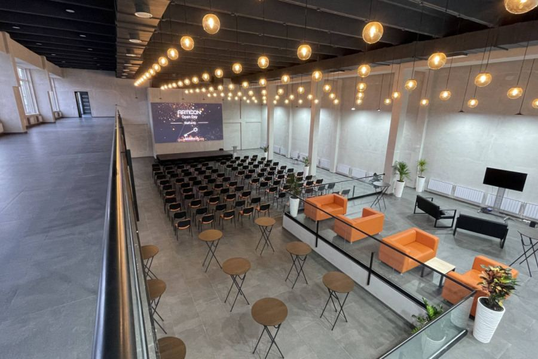

Прямая видимость
Все 85 кресел — на одном уровне перед LED. Без мест за колоннами, на балконе или сбоку от экрана. Схема каждого зала требует согласования.
Конференция на 60–70 участников, театр до 85 мест и фуршет на 70 гостей. Восемь вариантов с LED или заявленным видеооснащением для проверки под вашу презентацию.

Фото одного из вариантов · архив площадкиВсе 85 кресел — на одном уровне перед LED. Без мест за колоннами, на балконе или сбоку от экрана. Схема каждого зала требует согласования.
Проектор не заменяет LED. Для выбора нужны нативное разрешение, шаг пикселя, HDMI, яркость и тест с вашими графиками с последнего ряда.
Фуршет и напитки планируем сбоку или в глубине того же зала, без перестановки зрительских мест. Для многозонных залов это отдельное условие.
Цель — не более 15 минут от метро до входа в зал. Указанные ориентиры ещё не заменяют проверенный маршрут, особенно в бизнес-центрах.
Дата не выбрана. Это восемь кандидатов, а не восемь подтверждённых броней. У вариантов 6–7 наличие LED отмечено в базе, но паспорт не получен. Варианты 4–5 требуют особой проверки планировки или качества экрана. Неизвестные обязательные сборы пока не превращены в нулевые цены.
| Вариант | LED и главное условие | Расчёт с налогом |
|---|---|---|
| Вариант 1 · Единый индустриальный зал | 3,5 × 2 м · шаг 3,9 мм | 808 280 ₽ |
| Вариант 2 · Просторный зал с большим экраном | 6 × 3 м · шаг пикселя по запросу | 800 415 ₽ |
| Вариант 3 · Двухуровневый зал с высокими потолками | LED в аренде · размер и матрица по запросу | 823 405 ₽ |
| Вариант 4 · Пространство с готовой сценой | 4,5 × 2,5 м · шаг 3,9 мм | 1 270 500 ₽ |
| Вариант 5 · Камерный зал со сценой и баром | 4,5 × 2,5 м · HD 1280 × 720 | 421 685 ₽ |
| Вариант 6 · Мансардный зал с тёплым интерьером | LED отмечен в базе · паспорт по запросу | 1 310 430 ₽ |
| Вариант 7 · Большой зал с выразительной архитектурой | LED отмечен в базе · паспорт по запросу | 2 244 550 ₽ |
| Вариант 8 · Панорамный зал для делового события | 5 × 3 м · шаг P5 по сводке | 1 857 350 ₽ |
Это сумма всех оценённых статей и резервов, с организацией 10% и налогом 10%. Часть ставок — бюджетные резервы, а не оферты площадок. Обязательные сборы и минимальные заказы уточняются под дату. Налог 10% применяется к расходам с организацией; известный НДС площадки уже учтён в её строке аренды.
Единый зал на первом этаже; один из приоритетных вариантов. Схему без колонн в поле зрения нужно утвердить.
Нативное разрешение и схема коммутации запрашиваются. До утверждения — тест ваших таблиц и графиков с последнего ряда.
LED, звук, свет и 2 радиомикрофона входят в аренду. На сайте указана смена техника 8 часов; на девятый час заложен резерв 3 000 ₽.
Цена аренды, минимальный заказ, меню, сервис и доплата за девятый час пока не подтверждены.
| Статья | Расчёт и основание | Стоимость |
|---|---|---|
| Аренда | Плановый резерв аренды на 9 часов, не подтверждённый тариф под дату. | 220 000 ₽ |
| LED отдельно | В аренде | 0 ₽ |
| Техническое сопровождение | LED, звук, свет и 2 радиомикрофона входят в аренду. На сайте указана смена техника 8 часов; на девятый час заложен резерв 3 000 ₽. | 3 000 ₽ |
| Питание и напитки | 70 гостей × 5 000 ₽; меню подлежит согласованию | 350 000 ₽ |
| До минимального заказа кухни | Отдельная доплата не оценена; отсутствие минимума не подтверждено | 0 ₽ |
| Сервис | 20% от питания с минимальным заказом; ставка уточняется | 70 000 ₽ |
| Логистика | Доставка, монтаж, посуда — резерв по этой строке или в питании | 0 ₽ |
| Координатор агентства | Организация работы на площадке | 25 000 ₽ |
| Оценено расходов | Без пока не раскрытых сборов | 668 000 ₽ |
| Организация мероприятия | 10% от расходов | 66 800 ₽ |
| Налог | 10% от суммы расходов и организации | 73 480 ₽ |
| Итого с налогом | Предварительная стоимость, не фиксированная оферта | 808 280 ₽ |
Фото — из архива площадки. Свежесть отделки, входную группу, видео прохода и актуальный план нужно подтвердить до бронирования. Эскиз общей логики рассадки — ниже на странице.
85 кресел предлагаем разместить на одном уровне перед сценой; фуршет — вдоль задней или боковой стены.
Размер подтверждён. Разрешение, процессор, HDMI и режим презентаций уточняются.
LED, сцена, звук и мебель заявлены в аренде. Технический специалист на 9 часов — расчётный резерв 20 000 ₽, не оферта подрядчика.
Комплект кресел на 85 мест, стоимость кейтеринга и доставки, специалист, расположение фуршета и путь от метро требуют подтверждения.
| Статья | Расчёт и основание | Стоимость |
|---|---|---|
| Аренда | 160 000 ₽ за 4 часа + 5 × 40 000 ₽ = 360 000 ₽ за 9 часов. Дополнительно 2 технических часа по условиям площадки. | 360 000 ₽ |
| LED отдельно | В аренде | 0 ₽ |
| Техническое сопровождение | LED, сцена, звук и мебель заявлены в аренде. Технический специалист на 9 часов — расчётный резерв 20 000 ₽, не оферта подрядчика. | 20 000 ₽ |
| Питание и напитки | 70 гостей × 3 000 ₽; меню подлежит согласованию | 210 000 ₽ |
| До минимального заказа кухни | Отдельная доплата не оценена; отсутствие минимума не подтверждено | 0 ₽ |
| Сервис | 15% от питания с минимальным заказом; ставка уточняется | 31 500 ₽ |
| Логистика | Доставка, монтаж, посуда — резерв по этой строке или в питании | 15 000 ₽ |
| Координатор агентства | Организация работы на площадке | 25 000 ₽ |
| Оценено расходов | Без пока не раскрытых сборов | 661 500 ₽ |
| Организация мероприятия | 10% от расходов | 66 150 ₽ |
| Налог | 10% от суммы расходов и организации | 72 765 ₽ |
| Итого с налогом | Предварительная стоимость, не фиксированная оферта | 800 415 ₽ |
Фото — из архива площадки. Свежесть отделки, входную группу, видео прохода и актуальный план нужно подтвердить до бронирования. Эскиз общей логики рассадки — ниже на странице.
Двухуровневое пространство; все 85 зрительских мест нужны на основном уровне. Зону питания оставляем вне зрительских рядов.
На официальном сайте подтверждён светодиодный экран. Старые материалы указывают 4,5 × 2,5 м; актуальный паспорт запрашивается.
Основной LED, звук, свет, радиомикрофоны и сцена включены. Доплата за продление смены специалиста — резерв 3 000 ₽.
Тариф на 9 часов, выход меню, сервис, минимальный заказ, паспорт LED и размещение 85 кресел нужно подтвердить.
| Статья | Расчёт и основание | Стоимость |
|---|---|---|
| Аренда | Плановый резерв аренды на 9 часов. Стоимость на сайте — по запросу. | 250 000 ₽ |
| LED отдельно | В аренде | 0 ₽ |
| Техническое сопровождение | Основной LED, звук, свет, радиомикрофоны и сцена включены. Доплата за продление смены специалиста — резерв 3 000 ₽. | 3 000 ₽ |
| Питание и напитки | 70 гостей × 5 000 ₽; меню подлежит согласованию | 350 000 ₽ |
| До минимального заказа кухни | Отдельная доплата не оценена; отсутствие минимума не подтверждено | 0 ₽ |
| Сервис | 15% от питания с минимальным заказом; ставка уточняется | 52 500 ₽ |
| Логистика | Доставка, монтаж, посуда — резерв по этой строке или в питании | 0 ₽ |
| Координатор агентства | Организация работы на площадке | 25 000 ₽ |
| Оценено расходов | Без пока не раскрытых сборов | 680 500 ₽ |
| Организация мероприятия | 10% от расходов | 68 050 ₽ |
| Налог | 10% от суммы расходов и организации | 74 855 ₽ |
| Итого с налогом | Предварительная стоимость, не фиксированная оферта | 823 405 ₽ |
Фото — из архива площадки. Свежесть отделки, входную группу, видео прохода и актуальный план нужно подтвердить до бронирования. Эскиз общей логики рассадки — ниже на странице.
Резерв по планировке: пространство состоит из связанных зон. Нужна схема 85 мест в одном зале с прямой видимостью, без посадки за порталами.
Нативное разрешение и читаемость плотных графиков проверяются на тестовой презентации.
LED, сцена, звук, свет и микрофоны входят в аренду. Для девятого часа работы техника заложен резерв 3 000 ₽.
Формат единого помещения — главный вопрос. Ставки сезонные; для конференции без даты могут отличаться. Необходимы подтверждение кухни и окончательный список сборов.
| Статья | Расчёт и основание | Стоимость |
|---|---|---|
| Аренда | Ориентир из декабрьской сводки. На выбранную дату и 9 часов нужен новый расчёт. | 350 000 ₽ |
| LED отдельно | В аренде | 0 ₽ |
| Техническое сопровождение | LED, сцена, звук, свет и микрофоны входят в аренду. Для девятого часа работы техника заложен резерв 3 000 ₽. | 3 000 ₽ |
| Питание и напитки | 70 гостей × 8 000 ₽; меню подлежит согласованию | 560 000 ₽ |
| До минимального заказа кухни | Отдельная доплата не оценена; отсутствие минимума не подтверждено | 0 ₽ |
| Сервис | 20% от питания с минимальным заказом; ставка уточняется | 112 000 ₽ |
| Логистика | Доставка, монтаж, посуда — резерв по этой строке или в питании | 0 ₽ |
| Координатор агентства | Организация работы на площадке | 25 000 ₽ |
| Оценено расходов | Без пока не раскрытых сборов | 1 050 000 ₽ |
| Организация мероприятия | 10% от расходов | 105 000 ₽ |
| Налог | 10% от суммы расходов и организации | 115 500 ₽ |
| Итого с налогом | Предварительная стоимость, не фиксированная оферта | 1 270 500 ₽ |
Фото — из архива площадки. Свежесть отделки, входную группу, видео прохода и актуальный план нужно подтвердить до бронирования. Эскиз общей логики рассадки — ниже на странице.
Резерв по экрану и планировке: 85 кресел должны стоять внизу. Верхний этаж не используем для зрителей; фуршет в том же помещении нужно согласовать.
LED — дополнительная услуга 20 000 ₽. 720p может ограничить читаемость мелкого текста; вариант только после проверки контента.
Звук, радиомикрофоны и стандартный свет в аренде. Специалист — резерв 20 000 ₽; LED отдельно 20 000 ₽.
Нужны 85 кресел на одном уровне, схема фуршета, специалист, сервис, финальное меню и условия монтажа/демонтажа. Резерв доставки 10 000 ₽.
| Статья | Расчёт и основание | Стоимость |
|---|---|---|
| Аренда | 9 × 9 000 ₽ по открытому тарифу пн–чт на 50–100 гостей. В декабре и выходные цена другая; дата пока не выбрана. | 81 000 ₽ |
| LED отдельно | Дополнительный LED по открытому прайсу | 20 000 ₽ |
| Техническое сопровождение | Звук, радиомикрофоны и стандартный свет в аренде. Специалист — резерв 20 000 ₽; LED отдельно 20 000 ₽. | 20 000 ₽ |
| Питание и напитки | 70 гостей × 2 500 ₽; меню подлежит согласованию | 175 000 ₽ |
| До минимального заказа кухни | Отдельная доплата не оценена; отсутствие минимума не подтверждено | 0 ₽ |
| Сервис | 10% от питания с минимальным заказом; ставка уточняется | 17 500 ₽ |
| Логистика | Доставка, монтаж, посуда — резерв по этой строке или в питании | 10 000 ₽ |
| Координатор агентства | Организация работы на площадке | 25 000 ₽ |
| Оценено расходов | Без пока не раскрытых сборов | 348 500 ₽ |
| Организация мероприятия | 10% от расходов | 34 850 ₽ |
| Налог | 10% от суммы расходов и организации | 38 335 ₽ |
| Итого с налогом | Предварительная стоимость, не фиксированная оферта | 421 685 ₽ |
Фото — из архива площадки. Свежесть отделки, входную группу, видео прохода и актуальный план нужно подтвердить до бронирования. Эскиз общей логики рассадки — ниже на странице.
Резерв по технике: компактная мансарда, 85 мест и постоянный фуршет нужно проверить обмерной схемой. Расположение на верхнем этаже.
Официальный сайт указывает видеооборудование без паспорта LED. Размер, матрица и наличие именно LED должны быть подтверждены до выбора.
Свет, звук, видеооборудование и мебель заявлены площадкой. Работа специалиста — резерв 20 000 ₽.
LED не подтверждён паспортом, схема 85 мест не утверждена, сезонная цена и НДС требуют ответа. Вариант не выдаётся за полностью проверенное соответствие.
| Статья | Расчёт и основание | Стоимость |
|---|---|---|
| Аренда | Консервативный резерв: 300 000 ₽ из сезонной базы + резерв 22% НДС площадки. НДС для этой позиции пока не подтверждён и не является вашим дополнительным налогом 10%. | 366 000 ₽ |
| LED отдельно | В аренде | 0 ₽ |
| Техническое сопровождение | Свет, звук, видеооборудование и мебель заявлены площадкой. Работа специалиста — резерв 20 000 ₽. | 20 000 ₽ |
| Питание и напитки | 70 гостей × 8 000 ₽; меню подлежит согласованию | 560 000 ₽ |
| До минимального заказа кухни | Отдельная доплата не оценена; отсутствие минимума не подтверждено | 0 ₽ |
| Сервис | 20% от питания с минимальным заказом; ставка уточняется | 112 000 ₽ |
| Логистика | Доставка, монтаж, посуда — резерв по этой строке или в питании | 0 ₽ |
| Координатор агентства | Организация работы на площадке | 25 000 ₽ |
| Оценено расходов | Без пока не раскрытых сборов | 1 083 000 ₽ |
| Организация мероприятия | 10% от расходов | 108 300 ₽ |
| Налог | 10% от суммы расходов и организации | 119 130 ₽ |
| Итого с налогом | Предварительная стоимость, не фиксированная оферта | 1 310 430 ₽ |
Фото — из архива площадки. Свежесть отделки, входную группу, видео прохода и актуальный план нужно подтвердить до бронирования. Эскиз общей логики рассадки — ниже на странице.
Большой запас площади; 85 кресел нужны в основной части зала, фуршет можно планировать вне зрительских рядов. Утверждение схемы обязательно.
В сводке есть видеооборудование, но нет матрицы и размеров LED. Требуется письменное подтверждение и тест презентации.
Свет, звук, видеооборудование и мебель заявлены в составе. Специалист — расчётный резерв 20 000 ₽.
Декабрьский минимальный заказ кухни 1 000 000 ₽ учтён, хотя 70 × меню дают меньше. Для другой даты условия могут отличаться. Паспорт LED не получен.
| Статья | Расчёт и основание | Стоимость |
|---|---|---|
| Аренда | 500 000 ₽ + 22% НДС площадки по имеющейся сезонной сводке. 22-часовой пакет покрывает 9 часов; под дату нужен новый прайс. | 610 000 ₽ |
| LED отдельно | В аренде | 0 ₽ |
| Техническое сопровождение | Свет, звук, видеооборудование и мебель заявлены в составе. Специалист — расчётный резерв 20 000 ₽. | 20 000 ₽ |
| Питание и напитки | 70 гостей × 8 000 ₽; меню подлежит согласованию | 560 000 ₽ |
| До минимального заказа кухни | Доведение до минимума по имеющимся условиям | 440 000 ₽ |
| Сервис | 20% от питания с минимальным заказом; ставка уточняется | 200 000 ₽ |
| Логистика | Доставка, монтаж, посуда — резерв по этой строке или в питании | 0 ₽ |
| Координатор агентства | Организация работы на площадке | 25 000 ₽ |
| Оценено расходов | Без пока не раскрытых сборов | 1 855 000 ₽ |
| Организация мероприятия | 10% от расходов | 185 500 ₽ |
| Налог | 10% от суммы расходов и организации | 204 050 ₽ |
| Итого с налогом | Предварительная стоимость, не фиксированная оферта | 2 244 550 ₽ |
Фото — из архива площадки. Свежесть отделки, входную группу, видео прохода и актуальный план нужно подтвердить до бронирования. Эскиз общей логики рассадки — ниже на странице.
Большой зал; требуются схема на 85 кресел без препятствий и постоянная зона кейтеринга. Учесть вход в башню, лифты и пропускной режим.
Шаг 5 мм требует особенно внимательной проверки мелкого текста. Нативное разрешение, яркость и формат сигнала запрашиваются.
LED, радиомикрофоны, мебель, гардероб и клининг заявлены в пакете. Специалист — резерв 20 000 ₽; сервис кухни считается включённым только по базе, подтверждение обязательно.
Паспорт P5, сборы БЦ, пропуска, техника и меню. Доступность и 15-минутный пеший маршрут до входа в зал пока не подтверждены.
| Статья | Расчёт и основание | Стоимость |
|---|---|---|
| Аренда | Сезонный ориентир из сводки с 20 декабря. Дата конференции не выбрана; стоимость на 9 часов и все сборы нужно подтвердить. | 1 000 000 ₽ |
| LED отдельно | В аренде | 0 ₽ |
| Техническое сопровождение | LED, радиомикрофоны, мебель, гардероб и клининг заявлены в пакете. Специалист — резерв 20 000 ₽; сервис кухни считается включённым только по базе, подтверждение обязательно. | 20 000 ₽ |
| Питание и напитки | 70 гостей × 7 000 ₽; меню подлежит согласованию | 490 000 ₽ |
| До минимального заказа кухни | Отдельная доплата не оценена; отсутствие минимума не подтверждено | 0 ₽ |
| Сервис | 0% от питания с минимальным заказом; ставка уточняется | 0 ₽ |
| Логистика | Доставка, монтаж, посуда — резерв по этой строке или в питании | 0 ₽ |
| Координатор агентства | Организация работы на площадке | 25 000 ₽ |
| Оценено расходов | Без пока не раскрытых сборов | 1 535 000 ₽ |
| Организация мероприятия | 10% от расходов | 153 500 ₽ |
| Налог | 10% от суммы расходов и организации | 168 850 ₽ |
| Итого с налогом | Предварительная стоимость, не фиксированная оферта | 1 857 350 ₽ |
Фото — из архива площадки. Свежесть отделки, входную группу, видео прохода и актуальный план нужно подтвердить до бронирования. Эскиз общей логики рассадки — ниже на странице.
На схеме 8 рядов по 10 кресел и последний ряд на 5 кресел. Все места ориентированы к экрану. Зона кейтеринга показана отдельно и не требует разборки рядов. Масштаб, колонны, проходы, эвакуационные выходы и фактические габариты здесь не моделируются; утверждённые схемы площадок на 85 мест пока не получены.
710 г еды и 1 350 мл напитков на гостя
Состав адаптируем под пищевые ограничения и согласованный бюджет.
Предлагаемый состав для согласования с кухней, включая кофе-паузу и фуршет. На 70 гостей — 49,7 кг еды и 94,5 л напитков. Это эскиз меню, не подтверждённое меню конкретной площадки. Резерв питания в смете включает целевой объём еды и напитков; позиции и включение сервиса проверяются отдельно.
Паспорт LED, нативное разрешение, шаг пикселя и тест слайды. Отдельно — возможность подключения своего ноутбука и резервный вывод.
Обмерная схема на 85 кресел с прямой видимостью и зоной питания на 70 гостей. Не принимаем общую вместимость зала за согласованную схему.
9 часов аренды, монтаж и демонтаж, смены специалистов, клининг, мебель, сервис, минимальный заказ, доставка и сборы бизнес-центра.
Свежие фото зала и входной группы, короткое видео маршрута от метро и входа. Архивные изображения на странице служат для первичного выбора.
Проверим дату, комплект оборудования, меню и все обязательные сборы. После письменного ответа площадки обновим расчёт и утвердим окончательную стоимость.